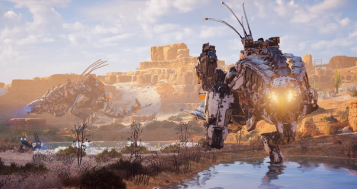
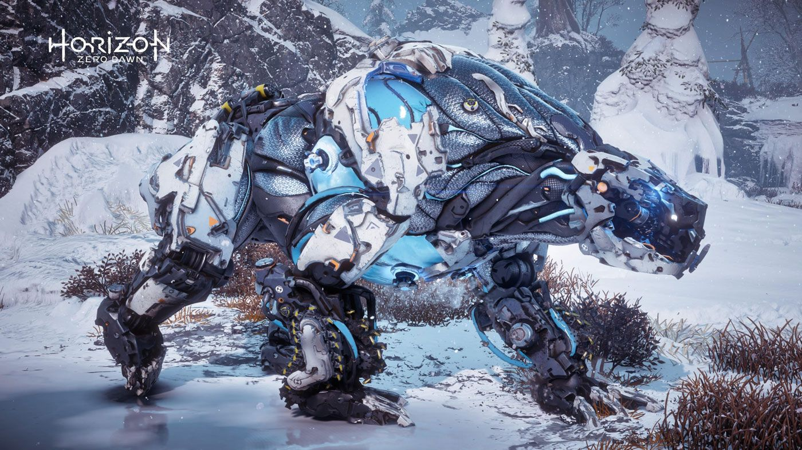
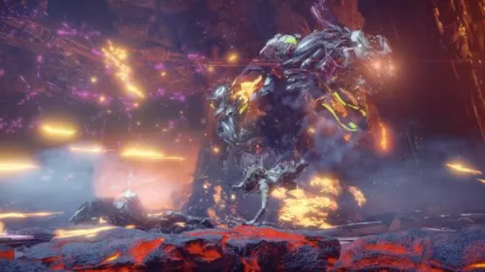

|
Самые опасные роботы из Horizon!!! Громозев! Громозев (ориг. Thunderjaw) — машина в игре Horizon: Zero Dawn. Это огромная машина боевого класса, одна из самых больших машин в своем классе. Его размер, мощь и арсенал наносящего огромный урон оружия делают его одним из самых опасных машин. Ледоклык! Ледоклык (ориг. Frostclaw) — огромная и мощная машина, чем-то напоминающая медведя, появившаяся в дополнении The Frozen Wilds. Как и его близнец огнеклык, ледоклык относится к классу добытчик, не смотря на его главную задачу — сражение. Это массивная машина, всегда готовая к бою, может использовать ледяные атаки как в ближнем, так и дальнем бою. Найти их можно только в землях Банук под названием Зарубка. Огнеклык!  Огнеклык (ориг. Fireclaw) — это усовершенствованная версия ледоклыка с противоположными атрибутами. Как можно понять из названия, эта машина наносит огненный урон, а её уязвимостью является холод. Кроме того, у огнеклыка больше здоровья и брони, поэтому к битве с ним нужно готовиться как к сражению с боссом. |